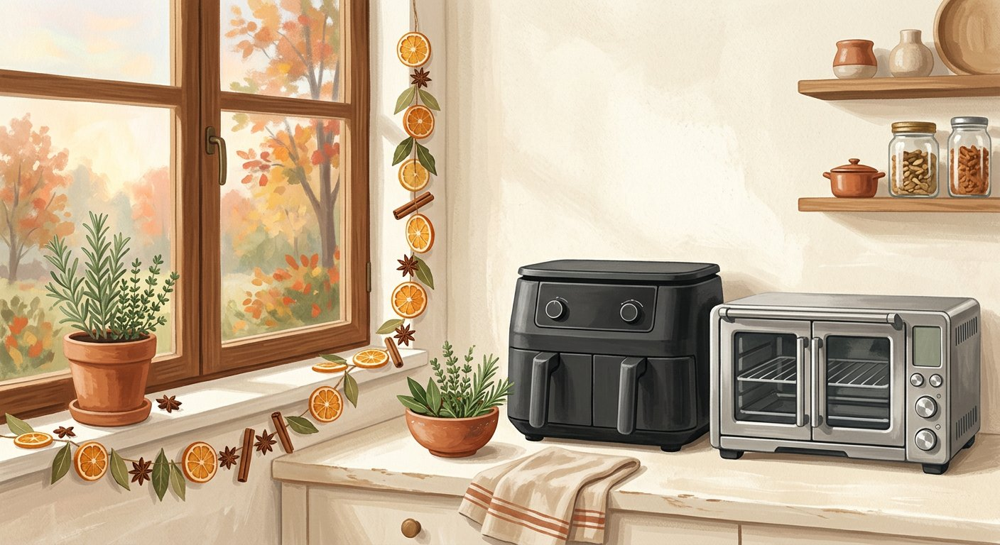

Format · 6 min
Basket or oven-style air fryer: what should you compare?
Footprint, batch size, versatility and cleanup — the comparison to run before any brand.
Read →As an Amazon Associate I earn from qualifying purchases. How our links work
THE BUYER'S NOTEBOOK
Short, practical guides written as questions, not verdicts. New guides are published on a set cadence, added to the sitemap and feed, and chosen from measured queries — never from instinct.
Format · 6 min
Footprint, batch size, versatility and cleanup — the comparison to run before any brand.
Read →
Capacity · 5 min
Turn the quart number into portions and counter space you can actually check.
Read →
Cleanup · 4 min
Walk the whole routine — out, cook, table, wash, store — before you buy.
Read →
Multi-function · 5 min
Functions you'd use weekly, what it retires, and what the box really includes.
Read →
Accessories · 4 min
Fit, airflow and the washing-up bill — the three checks before any rack or liner.
Read →
Running costs · 6 min
Wattage × time × your rate — the method, with nothing filled in for you.
Read →Seasonal · 5 min
The oven queue, the three measurements, and the cleanup contract before guests arrive.
Read →Titles are editorial hypotheses — not claims about search volume, popularity or product superiority. Seasonal framing is editorial too. New guides land here first; subscribe via RSS.